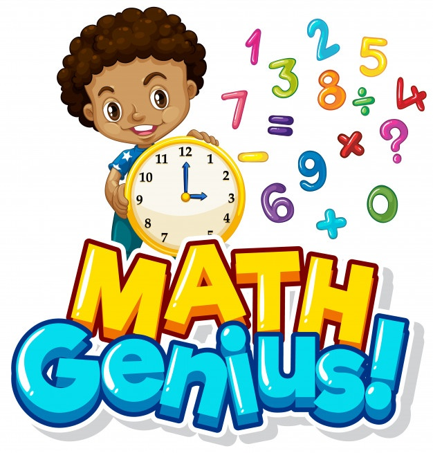

¿Qué son las Matemáticas?
Las matemáticas (del latín mathematĭca, y este del griego μαθηματικά, transliterado como mathēmatiká, derivado de μάθημα, tr. máthēma. 'conocimiento') son una ciencia formal que, partiendo de axiomas y siguiendo el razonamiento lógico, estudian las propiedades, estructuras abstractas y relaciones entre entidades abstractas como números, figuras geométricas, iconos, glifos o símbolos en general.
